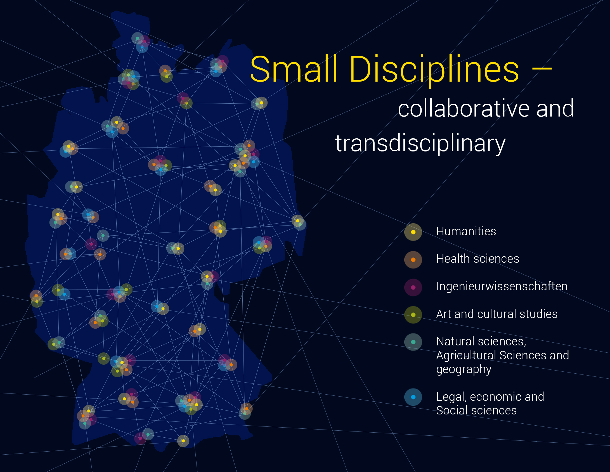

Warum brauchen „kleine Fächer" eine NFDI?

Die fortschreitende Digitalisierung und die Open-Access-Bewegung haben zu einer Transformation des Forschungsprozesses und zur stärkeren Verbreitung von Forschungsdaten geführt. Im Zuge dieser Entwicklung haben sich wissenschaftliche Institutionen wie Universitäten, Forschungseinrichtungen aber auch kleinere Gruppen und Akteure zur nachhaltigen Verwaltung und zum interdisziplinären Austausch von Forschungsdaten verpflichtet. Die Initiative zum Aufbau einer Nationalen Forschungsdateninfrastruktur trägt diesen massiven strukturellen Wandel Rechnung. Damit verbunden sind die systematische Planung, Sammlung, Verarbeitung, Analyse, Archivierung, Publikation und der Austausch von Daten unterschiedlichen Typs zur Wiederverwendung durch die wissenschaftliche Gemeinschaft sowie durch eine breite interessierte Öffentlichkeit.
Hierbei waren und sind insbesondere Geistes-, Kultur- und Sozialwissenschaften vor neue Herausforderungen gestellt, da Forschungsdatenmanagement und standardisierter Datenaustausch oft weniger selbstverständlich in ihre disziplinäre Kultur und Infrastruktur integriert sind, als im Fall der Lebens- oder Naturwissenschaften.
Die hiermit verbundenen Anforderungen sind gerade die sogenannten kleinen Fächer eine besonders schwer zu meistern. Hierzu gehören derzeit deutschlandweit über 150 Fächer, überwiegend geistes-, sozial- und kulturwissenschaftliche Disziplinen, die institutionell und ihrem Selbstverständnis nach keine bloßen Teildisziplinen eines größeren Fachbereichs darstellen.1 Die langfristige Förderung und Sicherung des Fortbestehens dieser Fächer stellt ein hochrangiges hochschulpolitisches Ziel für die Lehr- und Forschungsinfrastruktur in Deutschland überhaupt dar, wie Bundesbildungsministerin Anja Karliczek betont hat: „Auf die vielen großen Fragen unserer Gesellschaft, nicht zuletzt was sie zusammenhält, geben die Kleinen Fächer wertvolle Antworten. Sie schaffen bedeutsames Wissen und tragen dazu bei, unser kulturelles Erbe zu bewahren."2
For further references please click image


Gleichwohl können kleine Fächer beim Aufbau von modernen Forschungsdateninfrastrukturen nicht oder nicht in notwendigem Umfang auf die Ressourcen jener Institutionen zugreifen, an welche sie i.d.R. organisatorisch angebunden sind. Sie verfügen jedoch auch nicht über notwendige eigene Mittel und Strukturen, um die spezifischen Bedürfnisse ihrer wissenschaftlichen Gemeinschaft im Hinblick auf modernes Forschungsdatenmanagement zu unterstützen, bestehende Praktiken an neue Standards anzupassen und so kompatible, nutzerorientierte Konzepte für Datenaustausch, -sicherung und -wiederverwendung zu implementieren.
Wie die vom Bundesbildungsministerium unterstützte „Arbeitsstelle Kleiner Fächer" betont, gehört die Mehrheit der kleinen Fächer zwar den „insgesamt weniger drittmittelfinanzierten" Geistes- und Kulturwissenschaften an, sie weisen aber (anders als größere geistes- und kulturwissenschaftliche Fächer) eine vergleichsweise überdurchschnittliche Drittmittelquote auf – sowohl hinsichtlich der Anzahl der Anträge wie auch bei den bewilligten Mitteln –, was nicht zuletzt als ein Indikator für einen entsprechend hohen Bedarf angesehen werden kann.3Derzeit gibt es keine einheitlichen hochschulpolitischen Rahmenbedingungen für die Förderung kleiner Fächer: In manchen Bundesländern wurden entsprechende spezielle Programme initiiert, in anderen gibt es keinerlei Maßnahmen; ergänzt durch Förderangebote der jeweiligen Fachgesellschaften oder durch Stiftungen.4
Ein weiterer hier zu berücksichtigender Faktor ist die besonders kollaborativ und transdisziplinär ausgerichtete Arbeitsweise kleiner Fächer, wie es auch im Rahmen eines vom BMBF geförderten Forschungsprojekt zur „Dynamik kleiner Fächer" von 2019 bis 2022 untersucht wird.5
Davon sind nicht nur Kooperationen mehrerer kleiner und/oder mittelgroßer Fächern betroffen, sondern auch die Lehre und die Betreuung des wissenschaftlichen Nachwuchses: Angesichts der thematischen Breite und Methodenvielfalt können Forschungsfragen und -themen in kleinen Fächern oftmals nur noch durch Beteiligung mehrerer Fachdisziplinen charakterisiert und angemessen bearbeitet werden: Innovationen werden typischerweise durch disziplinen- und kulturübergreifende Arbeit im transnationalen Austausch erreicht und benötigen daher in besonderem Maße die digitale Vernetzung, den Austausch von Forschungsdaten und eine leistungsfähige und nutzerfreundliche Infrastruktur, um dieses Ziel zu realisieren und für die Zukunft auszubauen.
Kleine Fächer: Formale Kriterien
In Abgrenzung zu größeren Fachbereichen und Teildisziplinen hat die „Arbeitsstelle Kleine Fächer" der JGU Mainz Kriterien erarbeitet,8 die im Folgenden als Grundlage zur Bestimmung von Merkmalen, User-Profilen und spezifischen Anforderungen bei der Nutzung von Forschungsdaten herangezogen und erweitert werden sollen. Derzeit geht die Arbeitsstelle von 157 kleinen Fächern und 2311 Professuren an 89 Standorten bundesweit aus. Diese gehören sechs Fachkulturen an, die sich wiederum in 19 Fachgruppen gliedern: 1) Geisteswissenschaften; 2) Gesundheitswissenschaften; 3) Ingenieurwissenschaften; 4) Kunst- und Kunstwissenschaften; 5) Naturwissenschaften, Agrarwissenschaften und Geographie; 6) Rechts-, Wirtschafts- und Sozialwissenschaften.6
Über die Hälfte der kleinen Fächer gehören den Geisteswissenschaften an, mit einigem Abstand gefolgt von den unter 5) sowie den unter 6) zusammengefassten Fachkulturen.7 Entscheidend ist in diesem Kontext, dass die spezifischen Interessen vieler der in den Fachkulturen zusammengefassten Fachgruppen bislang nicht oder kaum gesondert angesprochen werden, was nicht zuletzt einer relativ ausgeprägten Dynamik im Feld geschuldet ist: Neue kleine Fächer wie Digital Humanities oder Biodiversität etablieren sich, während andere aufgrund eines starken Wachstums den Status als kleines Fach verlieren oder aber ganz in größeren Disziplinen aufgehen.
Als Voraussetzungen gelten hierbei eine Zahl von nicht mehr als drei unbefristete Professuren pro Standort, deutschlandweit sind bis zu zwei Ausnahmen möglich. Für den jeweiligen Wissenschaftszweig gibt es an deutschen Universitäten eigene Professuren mit spezifischen Denominationen.
Eigene Studiengänge mit qualifiziertem Abschluss: Der jeweilige Wissenschaftszweig ist mit eigenen Studiengängen (Bachelor/ Master/Magister/ Diplom/ Staatsexamen) an deutschen Universitäten vertreten.
Die Selektion und Ausbildung des wissenschaftlichen Nachwuchses, d.h., die Möglichkeit der Promotion sowie die Etablierung von Juniorprofessuren mit der Aussicht auf Verstetigung bzw. Tenure-Track-Verfahren.
Sozial-kommunikative Ebene
Kleine Fächer kooperieren und kommunizieren nicht mehr nur projektbezogen, sondern sind generell international und kollaborativ ausgerichtet, um den thematisch-strukturell bedingten besonderen Forschungsanforderungen gerecht zu werden. Gleichwohl verfügen sie auch über eine spezifische Kommunikationsstruktur und dafür geeignete Medien sowie ein für die Öffentlichkeit erkennbares Mindset.
Hierzu gehört das Selbstverständnis als eigenes Fach: Die Professoren und Professorinnen, welche den jeweiligen Wissenschaftszweig an deutschen Universitäten vertreten, verstehen diesen als eigenständiges Fach.
Vertretung durch eine Fachgesellschaft: Der jeweilige Wissenschaftszweig verfügt über eine nationale oder internationale Fachgesellschaft oder wird in Ausnahmefällen von einer übergeordneten Fachgesellschaft klar als eigenständiges Fach anerkannt. Dies ist nicht zuletzt die Voraussetzung für den Zugang zu Fördermitteln verschiedener Institutionen, worauf kleine Fächer besonders angewiesen sind.
Fachzeitschriften und weitere Kommunikationsorgane: Der jeweilige Wissenschaftszweig verfügt über eigene nationale oder internationale einschlägige Publikationsorgane.
Zielgruppen und Bedürfnisse
Es ist erklärtes Ziel des NFDI4SD, eine Infrastruktur und Services für sämtliche kleinen Fächer und die durch sie vertretenen Fachkulturen und -gruppen bereitzustellen und diese in der Umsetzung ihrer individuellen Ziele und Projekte im Sinne eines entwicklungsfähigen Forschungsdatenmanagements zu unterstützen. Dabei soll eine Servicestruktur helfen, die modular nach den jeweiligen Bedürfnissen und Anforderungen zusammengestellt werden kann. Die unterschiedliche Fach-, Kommunikations und Publikationskultur von scholars wie scientists (im Folgenden verbindend als user, agents oder researcher bezeichnet) muss entsprechend Berücksichtigung finden und soll nicht durch statische, unflexible Rahmenbedingungen und Abläufe eingeschränkt werden. So beschrieb auch der Wissenschaftssoziologe Rudolf Stichweh wissenschaftliche Disziplinen im Kontext von Differenzierungs- und Entdifferenzierungsbewegungen 2019 als hoch dynamische Kommunikationssysteme: Die zunehmende Problemorientierung und Projektierung moderner Wissenschaft wird demzufolge durch die Digitalisierung, aber auch neue Anforderungen an berufliche Qualifikation weiter verstärkt.9
Das Konsortium NFDI4SD wird Forscherinnen, Forscher unterschiedicher Disziplinen sowie interessierter Institutionen daher ganz bewusst in den Entwicklungsprozess der neuen Infrastruktur miteinbeziehen, u.a. durch die Nutzung sozialer Medien, die Entwicklung, Verbreitung und Auswertung von Fragekatalogen zum gewünschten Serviceangebot sowie die Ausschreibung und Förderung von Pilotprojekten. Die gewonnenen Erkenntnisse und Erfahrungen sollen in den Aufbau und Entwicklungsprozess des NFDI4SD Eingang finden und sukzessive evaluiert werden. Ziel ist es, die Nachnutzbarkeit von Forschungsdaten durch verschiedenen Handlungsstrategien anzubieten und umzusetzen, da diese ansonsten aufgrund mangelnder Ressourcen – seien es Zeit, Know-how oder finanzielle Mittel – für die Allgemeinheit verlorengehen.
An dieser Stelle wird ein weiteres Charakteristikum des NFDI4SD deutlich: Es werden ausdrücklich Projekte in verschiedenen Entwicklungsstadien, Größenordnungen sowie mit variierender Förderdauer angesprochen, von Qualifikationsprojekten wie Abschlussarbeiten und Dissertationen bis zu größeren Forschungsgruppen in Institutionen und Universitäten.
Gerade im Fall von Dissertationen ist in vielen Disziplinen bislang primär die abschließende Publikation von Forschungsresultaten Maßstab des Gelingens eines Forschungsvorhabens, während zugrunde liegende Daten nicht kontextualisiert und systematisch erschlossen werden. Letztere können somit auch nicht von anderen zitiert werden bzw. müssten hierfür erneut bearbeitet werden. Bei umfangreicheren interdisziplinären Forschungsprojekten und Kollaborationen sind die durch die Kommunikation und Bewertungen aus verschiedenen Perspektiven gewonnenen Erkenntnisse und Teilergebnisse von besonderer Bedeutung. Die Veröffentlichung von Forschungsdaten und Teilergebnissen, die so eine stärkere Dynamik und Relevanz für den Gesamtforschungsprozess entfalten, wird so erleichtert.
Desiderata
Desideratum
D1 Sequential planning tends to place publications at the end of a research process, mostly beyond funding period.
Desideratum
D2 Missing infrastructure for long term archiving and publishing of data
Desideratum
D3 Integration of research data into a network of global data ressources supplementing each other
Desideratum
D4 Registry of applicable software solutions for standard computational workflows
Desideratum
D5 Integration of expertise external to academic research into data network of specialized ressources
Desideratum
D6 Dissemination of research to a broader interested public. Development and service of quick and stable deployment strategies
Additional references
- Arbeitsstelle Kleine Fächer: Tagung „Kleine Fächer: Entwicklungen – Strategien – Perspektiven“, 12./13.09.2019,
- Sylvia Paletschek: Der Blick der Universitätsgeschichte auf die Kleinen Fächer, Tagung „Kleine Fächer: Entwicklungen – Strategien – Perspektiven“, 2019
- Mechthild Dreyer: Strategische Weiterentwicklung Kleiner Fächer. Resümee der Empfehlungen der Workshops Januar/Oktober 2018
- Arbeitsstelle Kleine Fächer: Kartierungsbericht 2019
- Vera Szöllösi-Brenig: Bericht zum Symposium "Fächer in Bewegung – Differenzierung und Entdifferenzierung im System der Wissenschaft?", 2019
- Antonio Loprieno: Kleine Fächer und große Aussichten. Fachtagung der Arbeitsstelle Kleine Fächer, Mainz 2019
- Förderrichtlinen für Kleine Fächer, BMBF, 25.07.2019
- Informations- und Vernetzungsworkshop, Digitalisierung in Lehre und Forschung kleiner Fächer im Rahmen des Projekts „Die Dynamik kleiner Fächer“ 5. November 2020
-
Siehe Erhebung der Arbeitsstelle Kleine Fächer, Johannes Gutenberg-Universität Mainz, 2020, https://www.kleinefaecher.de/kartierung/kleine-faecher-von-a-z.html, (Zugriff am 30.08.2020). ↩
-
Anja Karliczek zit. nach BMBF, "Kleine Fächer – Große Potenziale", https://www.bmbf.de/de/kleine-faecher-grosse-potentiale-3261.html, (Zugriff am 30.09.2020). ↩
-
Hoffmann, Stefanie; Haas, Katharina; Bahlmann, Katharina; Schmidt, Uwe 2019: Bericht zum Stand der Kartierung kleiner Fächer im Projekt "Erfahrungsaustausch, Vernetzung und Förderung der Sichtbarkeit kleiner Fächer", bes. S. 18–23. ↩
-
Siehe hierzu die detailierten Information der Arbeitsstelle Kleine Fächer, JGU Mainz, 2020: https://www.kleinefaecher.de/rahmenbedingungen.html, (Zugriff am 30.08.2020). ↩
-
Siehe hierzu die aktuellen Information der Arbeitsstelle Kleine Fächer, https://www.kleinefaecher.de/kartierung/arbeitsstelle-kleine-faecher.html ↩
-
Siehe Hoffmann, Stefanie; Haas, Katharina; Bahlmann, Katharina; Schmidt, Uwe 2019: Bericht zum Stand der Kartierung kleiner Fächer im Projekt "Erfahrungsaustausch, Vernetzung und Förderung der Sichtbarkeit kleiner Fächer", bes. S. 9f. ↩
-
Siehe Hoffmann, Stefanie; Haas, Katharina; Bahlmann, Katharina; Schmidt, Uwe 2019: Bericht zum Stand der Kartierung kleiner Fächer im Projekt "Erfahrungsaustausch, Vernetzung und Förderung der Sichtbarkeit kleiner Fächer", bes. S. 18. ↩
-
Diese Kriterien fungieren als Arbeitsgrundlage und -definition der Arbeitsstelle Kleine Fächer, siehe https://www.kleinefaecher.de/kartierung/was-ist-ein-kleines-fach.html. ↩
-
Siehe Szöllösi-Brenig, Vera: Bericht zum Symposium "Fächer in Bewegung – Differenzierung und Entdifferenzierung im System der Wissenschaft?", 2019, S. 2, https://www.volkswagenstiftung.de/sites/default/files/downloads/2019-05%20Bericht_Fächer-in-Bewegung.pdf, (Zugriff am 30.08.2020) ↩